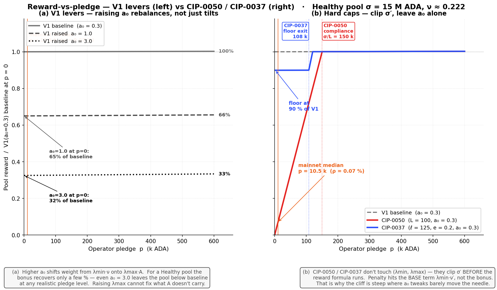
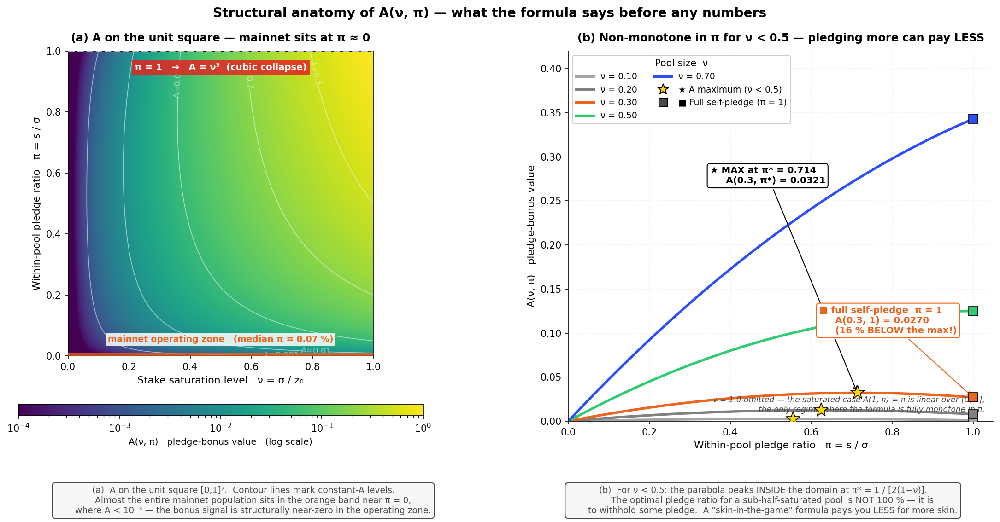
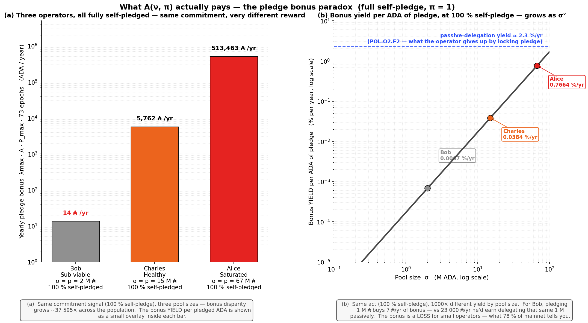
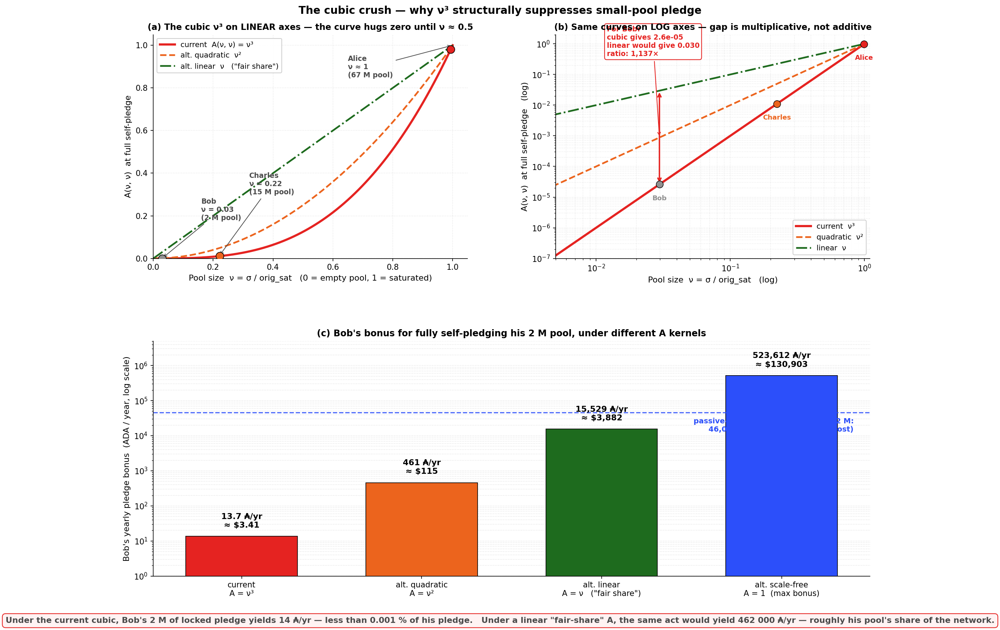

This folder evaluates the CIPs that act on the stake-cap layer of the Cardano reward pipeline — the reward-eligible pool stake $\sigma'$ that enters the SL-D1 reward formula, upstream of the operator/member split that the fee layer reshapes.
The two CIPs in scope (CIP-0050, CIP-0037) target a real broken signal that the mainnet diagnostic confirms: pledge is priced as irrelevant by the operator population. POL.O2.F2 — pledge yield (0.68 %/yr) is structurally dominated by passive-delegation yield (~2.3 %/yr); POL.O2.F1 — 78 % of staked ADA sits in pools with pledge ratio < 1 %; POL.O4.F3 — 41 of 48 capital-sufficient MPOs forfeit the bonus. Both CIPs respond by making pledge binding on the reward formula — without sufficient pledge, the pool's reward-eligible stake is clipped.
Verdict on both CIPs: no-go, for two stacked reasons.
The load-bearing piece is A(ν, π), and neither CIP touches it. V1 already exposes a pledge-incentive knob — a₀, the weight of the pledge bonus inside the reward envelope (current mainnet value 0.3; full walkthrough in Why a new instrument when V1 already has a pledge lever? below). Raising a₀ rebalances the formula but does not make pledge "matter more" — every low-pledge pool earns less before the bonus can recover. CIP-0050 and CIP-0037 add a third lever (clip σ′ before the formula runs) on top of a₀ and k, but they accept A(ν, π) as given. That function carries three structural pathologies:
a permanent quadratic ν² size penalty applies at every pledge ratio — small pools are crushed regardless of how committed the operator is;
a non-monotonicity in π for sub-half-saturated pools — a 2 M operator (ν ≈ 0.03) earns 8.7×more bonus by pledging 51 % than by fully self-pledging. The formula explicitly incentivises small operators to under-commit;
a cubic ν³ collapse at full self-pledge — a saturated operator earns 37 595× more bonus than a 2 M operator at maximum commitment, because the size factor cubes when the pledge factor saturates.
The σ′ clip changes who can earn the V1 reward; it does not repair what A does to the pledge signal. The relative bonus disparity, the under-commitment incentive, and the cubic crush all carry through unchanged.
A genuine V2 stake-cap reform must redesign A with three properties no CIP currently in scope delivers:
a smoother operator onset at low ν — no cubic crush of small pools as they grow;
a design that does not privilege fully-private pools (π = 1) — the V2 target is not "everyone runs a 100 %-pledged pool";
explicit reward for the balanced-commitment regime (π ≈ 0.5) — pledge serving as a credible signal and the pool remaining open to delegation.
Capital-capability bias compounds the A objection. By making pledge binding, both CIPs implicitly discriminate by the operator's capital, not by operator quality. Custodial entities (~21 % of productive stake) hold custodied retail funds they legally cannot self-pledge — their reward collapses to the pledge floor regardless of operator quality. Retail small operators (POL.O5.F2 — 78 % of single-pool stake non-compliant at pledge < 2 %) mostly do not have the capital to raise pledge — their only response is reduced reward or exit. The reform rewards the population that can pledge and penalises the population that cannot, independent of whether the penalised pools produce reliable blocks, serve delegators well, or contribute to decentralisation by any other measure. Even if A were repaired, the σ′ primitive on its own would still pressure the wrong segment.
Side effect on small-operator viability. Small retail pools that have attracted delegation in reliance on V1 rules see their σ′ clipped — both operator revenue and delegator ROS drop. This is the opposite direction of the V2 Operator Viability milestone. A stake-cap instrument that restores pledge-as-signal is legitimate on its own terms, but it should not be deployed without an active viability instrument protecting the low-pledge retail population the stake-cap rule would otherwise penalise.
Table of Contents
1. Stake-cap formulas
The shared intent. Under V1, the saturation cap is a constant — orig_sat = 1/k ≈ 67.44 M ₳ at k = 500 — independent of pledge. A pool can attract delegation up to that ceiling regardless of how much pledge the operator puts up; pledge enters the reward calculation only via the small bonus term $a_0$ in the SL-D1 numerator (worth ≈ 30 % of the reward at $a_0 = 0.3$, but structurally dominated by passive-delegation yield — see POL.O2.F2).
Both CIPs in this folder share a single intent: replace this constant horizontal cap with a function of pledge. The new cap rises linearly with the operator's pledge until it reaches the V1 ceiling $\text{orig\_sat}$ — beyond that, the new rule and V1 coincide. The intent is identical for both candidates: to earn the V1 ceiling, an operator must pledge enough; below that pledge level, the effective cap is reduced proportionally.
Both candidates therefore reshape $\sigma'$ (reward-eligible pool stake) as a linear function of pledge, with the V1 ceiling $\text{orig\_sat} = 1/k$ as hard upper bound. They differ only on what happens below the slope:
$(e, \ell)$ — $p_{100\%} = \text{orig\_sat}/\ell$ is derived
Structural kinship. For any pool large enough that $\sigma \geq \text{orig\_sat}$, the two candidates are the same primitive — a linear-in-pledge slope capped at the V1 saturation — differing only on what happens when pledge is low:
CIP-0050 clips the stake cap to $L \cdot p$ — at zero pledge, $\sigma' = 0$ (hard break).
CIP-0037 clamps the stake cap to $\ell \cdot p$ but places a floor at $e \cdot \text{orig\_sat}$ — at zero pledge, $\sigma' = e \cdot \text{orig\_sat} \approx 13.49$ M ₳ at reference.
Reference leverages differ by convention ($\ell = 125$ vs $L = 100$), not by design intent.
Panel (b) matches leverage at $\ell = L = 125$ to isolate the floor as the sole structural difference. CIP-0037 is CIP-0050 plus a floor — both target V2 §3.2 pledge-as-signal and §3.4 concentration via the same mechanism; CIP-0037 softens the low-pledge edge at a three-scalar governance cost instead of a one-scalar one.
2. Why a new instrument when V1 already has a pledge lever?
V1 already exposes a pledge-incentive knob: the pledge influence factor $a_0$ (currently 0.3 on mainnet). It enters the SL-D1 reward envelope as the weight of the pledge-bonus term:
What ν and π actually mean. Both are dimensionless ratios in $[0, 1]$ that capture the two structurally independent degrees of freedom an operator controls.
Symbol
Definition
Range
What it measures
Concrete example
ν
$\sigma / z_0$
$[0, 1]$
Stake saturation level — what fraction of one fully-saturated V1 pool the total stake represents (with $z_0 = 1/k \approx$ 67.44 M ADA at mainnet $k=500$)
ν and π are structurally independent — pool size and commitment fraction can vary freely, each on its own [0, 1] interval. The operating mainnet population sits very near the π = 0 axis: 78 % of staked ADA is in pools with π < 1 % (POL.O2.F1).
A reading shortcut: when you see ν in the formula, think "how big is the pool relative to one full V1 pool". When you see π, think "how much of the pool is the operator's own ADA".
The natural question is therefore: why propose CIP-0050 / CIP-0037 instead of just raising a₀? The answer requires looking at three nested layers — the lever's shape, the bonus function's structure, and what no proposal currently touches.
2.1. The a₀ lever rebalances, it doesn't tilt
Raising a₀ shifts more weight from the base term ($\lambda_{\text{size}}\nu$) onto the bonus term ($\lambda_{\text{pledge}}A$). For a low-pledge pool this reduces the base by more than the bonus can recover — the operator is punished smoothly, not catalysed.

Panel (a). For a Healthy pool ($\sigma = 15$ M, $\nu \approx 0.222$): raising $a_0$ from 0.3 → 1.0 drops the zero-pledge reward to 65 % of baseline; raising to 3.0 drops it to 32 %. The bonus barely recovers across the full pledge range — even at 600 k of self-pledge the higher-a₀ curves stay below baseline. The a₀ lever cannot make pledge "matter more" without first making low-pledge pools earn less.
Panel (b). CIP-0050 and CIP-0037 don't touch $(λ_{\min}, λ_{\max})$. They clip $\sigma'$ before the reward formula runs, so the penalty hits the base term $λ_{\min} \cdot \nu'$ — which is structurally much larger than $λ_{\max} \cdot A$ at any reasonable pool size. That is why their cliff is steep where a₀ tweaks barely move the needle.
2.2. The deeper bottleneck — A(ν, π) itself
Both a₀ (rebalancing) and CIP-0050 / CIP-0037 (clipping) operate around the A function. Neither modifies it. So before plugging any numbers in, dissect the function itself: what does it say structurally?
2.2.1. Anatomy of the function — before any numbers

(i) The factorisation: pure size factor × pledge-intensity factor.
The two effects are independent and multiplicative. The outer factor $\nu^2$ is a quadratic dependence on pool size — independent of pledge, applying at every commitment level. A pool earns bonus proportional to $\nu^2$ before any consideration of how much its operator pledges. The inner factor $\pi[1 - \pi(1-\nu)]$ controls how the pledge ratio modulates the bonus, with a weak coupling to $\nu$ via the $(1-\nu)$ term.
This is the load-bearing observation: pool size enters the bonus quadratically as a pure penalty against small pools, regardless of how committed the operator is. Even at the OPTIMAL pledge ratio for a given pool size, the bonus is still scaled by $\nu^2$.
(ii) Tour of the corners and edges.
Configuration
Condition
A reduces to
Interpretation
Zero pledge
$\pi = 0$
$A = 0$
No bonus, sensible.
Saturated pool
$\nu = 1$
$A = 1 \cdot \pi \cdot [1 - 0] = \pi$
Linear in $\pi$, well-behaved. The only regime where A is monotone clean.
Full self-pledge
$\pi = 1$
$A = \nu^2 \cdot 1 \cdot [1 - (1-\nu)] = \nu^3$
The cubic collapse.
Designed maximum
$(\nu, \pi) = (1, 1)$
$A = 1$
Saturated pool fully self-pledged.
The third row is where the elaborate quadratic construction collapses. At full self-pledge, the inner factor $\pi[1 - \pi(1-\nu)]$ degenerates to $\nu$, and combined with the outer $\nu^2$ produces $\nu^3$ — cubing sub-unit numbers. That cube is the load-bearing pathology, but as (i) made explicit, the underlying $\nu^2$ size penalty is permanent regardless of pledge.
(iii) The pledge-intensity factor and what it was meant to do.
The inner factor $\pi[1 - \pi(1-\nu)] = \pi - \pi^2(1-\nu)$ has two pieces with distinct intents. The linear $\pi$ part is the bilinear "more pledge → more bonus" signal. The quadratic $-\pi^2(1-\nu)$ part is a splitting penalty the SL-D1 design adds on purpose: an MPO who splits a fixed total pledge across $N$ pools shrinks the per-pool $\pi$, and the quadratic term penalises high-$\pi$/low-$\nu$ configurations the protocol associates with potential gaming.
The construction does achieve that intent in some regions. But it pays a heavy price elsewhere — pathology (iv) below.
(iv) The structural defect — A is non-monotone in π for any ν < 0.5.
Take the partial derivative of A with respect to π at fixed ν:
This is zero at $\pi^* = 1 / [2(1-\nu)]$ and negative for $\pi > \pi^*$. Two regimes follow:
For $\nu \geq 0.5$: $\pi^* \geq 1$, so the maximum sits at or beyond the boundary of the unit interval. Inside $[0, 1]$, A is monotone increasing in $\pi$ — pledging more always earns more bonus. ✓
For $\nu < 0.5$: $\pi^* < 1$, so the maximum sits strictly inside $[0, 1]$. Increasing pledge ratio from $\pi^*$ up to $\pi = 1$ (full self-pledge) decreases A. Pledging more pays less.
Worked example at $\nu = 0.3$ (a Healthy-tier pool around 20 M ADA):
π
A(0.3, π)
0.30
0.0233
0.50
0.0292
0.65
0.0319
0.714 (= π*)
0.0321 ← max
0.80
0.0317
1.00 (full self-pledge)
0.0270 — 16 % below the max
For a pool exactly at half-saturation ($\nu = 0.5$), the optimum is at $\pi = 1$. Below half-saturation, an operator who fully self-pledges destroys part of their bonus. The formula whose stated purpose is "skin in the game" pays you less for putting in more skin, for the entire population of pools below half-saturation — which is essentially the entire mainnet population.
Panel (b) of the figure shows this: each curve is A at fixed ν as a function of π over the unit interval. The gold star marks the interior maximum; the square marks the full self-pledge endpoint. For $\nu < 0.5$, the square is below the star.
(v) Summary of structural critiques — before any numbers.
The bonus has a quadratic outer size penalty $\nu^2$ that holds at every pledge ratio. Small pools are quadratically penalised for being small, before pledge enters the picture.
At full self-pledge ($\pi = 1$), the inner factor degenerates and A collapses to $\nu^3$ — the worst-case manifestation of the size penalty, compounding with a residual $\nu$ from the inner factor.
For any pool below half-saturation, A is non-monotone in $\pi$ — pledging beyond $\pi^* = 1/[2(1-\nu)]$ actively reduces the bonus.
The intended MPO-splitting penalty (the $-\pi^2(1-\nu)$ term) is achieved at the cost of (1)–(3).
These are pre-empirical defects: they hold regardless of mainnet data, regardless of what a₀ is set to, regardless of CIP reforms acting on σ′. They are properties of the algebra. With this in hand, the next subsection puts numbers on what they mean for actual operators.
2.2.2. What A actually pays — three operators across three pledge levels
Cast. Three honest operators, all running pools of different sizes:
Bob runs a Sub-viable 2 M ADA pool ($\nu \approx 0.03$).
Charles runs a Healthy 15 M ADA pool ($\nu \approx 0.222$).
Alice runs a Saturated 67 M ADA pool ($\nu \approx 0.99$).
All three are below half-saturation except Alice, so Bob and Charles already sit in the non-monotone regime described in (iv). Now follow the same three pledge configurations on each.
Scenario A — what mainnet actually does today (median pledge ratio 0.07 %)
This is where 78 % of staked ADA actually sits today (POL.O2.F1). Operators put down a token amount of pledge and earn near-zero bonus — but lose nothing significant either, because the opportunity cost of pledging that token amount is also small.
Operator
Pool σ
Pledge p (0.07 %)
Yearly bonus from A
Bob
2 M
1 400 ₳
0.3 ₳/yr (\$0.08)
Charles
15 M
10 500 ₳
18 ₳/yr (\$4.50)
Alice
67 M
47 000 ₳
362 ₳/yr (\$90)
Even Alice — a Saturated pool with the median pledge ratio — only earns ~\$90/yr in pledge bonus. The formula is essentially silent about pledge for everyone in this scenario. This is the equilibrium the diagnostic captures.
Scenario B — what CIP-0050 demands at L = 100 (1 % pledge ratio)
To reach the CIP-0050 compliance threshold (p ≥ σ/L), each operator must commit substantially more capital. The bonus does grow — but the disparity across pool sizes already shows up sharply.
Operator
Pool σ
Pledge p (1 %)
Yearly bonus from A
Bob
2 M
20 000 ₳
4.6 ₳/yr
Charles
15 M
150 000 ₳
257 ₳/yr
Alice
67 M
670 000 ₳
5 168 ₳/yr
Same act (1 % pledge ratio) — Alice earns 1 123× more bonus than Bob for committing the same fraction of her pool. And Bob has just been asked to lock 20 000 ₳ (\$5 000) of his own capital to earn 4.6 ₳/yr (\$1.15) in bonus. The yield on his pledge is 0.023 % vs 2.3 % passive — he loses ~100× by complying.
Scenario C — the maximum signal anyone can give (100 % self-pledge, π = 1)
The strongest possible commitment: every ADA in the pool is the operator's own. No MPO games, no delegator slack — pure skin-in-the-game. This is the corner $\pi = 1$ and triggers the cubic collapse from (ii).
Operator
Pool σ
Pledge p (100 %)
Yearly bonus from A
Bob
2 M
2 M
14 ₳/yr
Charles
15 M
15 M
5 762 ₳/yr
Alice
67 M
67 M
513 463 ₳/yr
Even at the maximum possible commitment, Alice earns 37 595× more bonus than Bob — because the cubic $\nu^3$ that emerges at $\pi = 1$ collapses the bonus on pool size, not on the strength of the commitment signal.
Furthermore — and this is pathology (iv) made tangible — Bob is on the wrong side of the maximum. His optimal pledge ratio is $\pi^* = 1/[2(1-\nu)] = 1/(2 \cdot 0.9703) \approx 0.515$ (about 51 % of his pool, $p^* \approx 1.03$ M ADA). At full self-pledge he earns 14 ₳/yr; at the interior optimum he would earn ~122 ₳/yr — 8.7× more bonus by withholding half his potential pledge. The formula explicitly incentivises him to under-commit.

Panel (a) is Scenario C as a bar chart at log scale (the disparity is too large for linear axes). Panel (b) re-expresses the same disparity as a "bonus yield" — bonus per ADA of pledge per year — and overlays the passive-delegation yield (~2.3 %/yr from POL.O2.F2) the operator gives up by locking that pledge: Bob's pledge yields 0.0007 %/yr in bonus, Charles's 0.038 %/yr, Alice's 0.77 %/yr. All three are below passive delegation, but Bob is by far the most penalised.
2.2.3. The cubic ν³ — visualised
Combine the corner-collapse from (ii) with the non-monotone pathology from (iv): the operator who gives the strongest possible signal (full self-pledge, $\pi = 1$) is paid by $\nu^3$ — a destruction operator on sub-unit numbers, layered on top of the permanent $\nu^2$ size penalty.

Panel (a) shows ν³ (red) versus quadratic ν² (orange) and linear ν (green, "fair share"). On linear axes, the cubic curve hugs zero until ν ≈ 0.5 and then leaps to 1 at full saturation — so anyone running a pool below half-saturation is in the flat region where pledge barely matters.
Panel (b) shows the same curves on log axes — the gap between cubic and linear is multiplicative, not additive. For Bob's ν = 0.03: the cubic gives 2.6 × 10⁻⁵, while a linear A would give 0.030 — a 1 137× ratio. That ratio is what the formula is destroying.
Panel (c) makes the cubic crush tangible in dollars. Bob's 2 M pool, fully self-pledged:
A kernel
Bob's yearly bonus
In USD @ \$0.25/ADA
current A = ν³
14 ₳/yr
\$3.41
alt. quadratic A = ν²
461 ₳/yr
\$115
alt. linear A = ν ("fair share")
15 529 ₳/yr
\$3 882
alt. scale-free A = 1
523 612 ₳/yr
\$130 903
Compare to the passive-delegation alternative: if Bob delegates that 2 M instead of pledging it, he earns ~46 000 ₳/yr at 2.3 %/yr. Under the current cubic, pledging costs him ~46 000 ₳/yr in opportunity for 14 ₳/yr in bonus. Pledging is a 3 286× loss for him. Under a linear A, the bonus alone (15 529 ₳/yr) would be a third of his opportunity cost — pledging would still lose, but less catastrophically. Under the scale-free kernel, pledging would be net positive even for the smallest operator.
2.2.4. What this means for the CIP critique
Walking through the structural anatomy and the three scenarios reveals one cumulative argument:
The function is structurally awkward before any data is plugged in (§2.2.1). Permanent quadratic size penalty $\nu^2$, non-monotonic in $\pi$ for sub-half-saturation pools, and at full self-pledge it collapses to a cubic.
Mainnet today (Scenario A). The bonus is silent for everyone. POL.O2.F1 is the predictable equilibrium of a formula with a near-zero gradient in the operating region.
At CIP-0050 compliance (Scenario B). The disparity across pool sizes becomes severe — Alice gets 1 123× more bonus than Bob for the same relative effort. Bob loses ~100× by complying.
At maximum commitment (Scenario C). The disparity becomes catastrophic — 37 595× — and the cubic $\nu^3$ at the corner $\pi = 1$ is the algebraic reason.
CIP-0050 and CIP-0037 modify the enforcement of pledge (clip $\sigma'$ if pledge is too low) but not the pricing of pledge inside A. After their reform, the relative bonus disparity across operator sizes remains identical; the non-monotone regime for $\nu < 0.5$ remains identical; the cubic collapse at full self-pledge remains identical. They patch around A without touching it.
A reform that touched A directly — replacing the kernel with one that doesn't impose the quadratic size penalty $\nu^2$ at every pledge ratio, or that doesn't cube small pools at full commitment — would be the most structural way to repair the pledge signal at its source. No CIP currently in scope proposes this. This is the deepest critique of both candidates in this folder: they accept A as given and patch around it, when A is the load-bearing piece of the pledge incentive.
This reading extends the formal critique at diagnostic / pools-distribution §2.3.5: "the bonus term $\lambda_{\text{pledge}}A(\nu, \pi)$ is non-linear and asymmetric in its two inputs. The outer factor $\nu^2$ imposes a quadratic size penalty that holds at every pledge ratio; at full self-pledge ($\pi = 1$) the inner factor degenerates and the bonus collapses to $\lambda_{\text{pledge}}\nu^3$ — the cubic that suppresses the bonus structurally for any pool below saturation."
2.3. What this implies for the CIP candidates in this folder
The two CIPs in this folder accept the V1 reward formula as given and patch around it via $\sigma'$ clipping. Three honest readings follow from §2.1 and §2.2:
CIP-0050 and CIP-0037 are not strictly worse than raising a₀. They achieve the same intent (make pledge bind) without the smooth-but-uniformly-painful penalty that an a₀ raise imposes on every low-pledge pool. The cliff/floor shape is different, not necessarily worse.
The "MPO fleet-splitting" property neither a₀ nor an A reform would deliver as cleanly. CIP-0050's revenue-neutral pool-splitting ($N \cdot L \cdot (P/N) = L \cdot P$) is an algebraic identity of its primitive that smooth levers cannot reproduce without coordination across pools. This is the strongest standalone argument for the CIP-0050 family.
None of the three reform vectors (a₀, σ' clip, A redesign) are mutually exclusive — and the deepest one is missing from the conversation. The CIP discussion treats σ' clipping as the only available primitive. A revision of A itself — removing the $\nu^2$ outer size penalty, or replacing the inner $\pi[1-\pi(1-\nu)]$ factor with a kernel that doesn't cube small pools at full commitment — would be the most structural way to repair the pledge signal at the right end of the formula. No CIP currently in scope proposes this.
The remainder of this folder evaluates the two σ'-clipping candidates on their own terms. The framing above is a reading aid, not a verdict — it reframes "is CIP-0050/0037 the right reform?" as "is σ' clipping the right layer of intervention?".
Not canonical — redundant by construction. Both instruments are the same linear-in-pledge primitive capped at orig_sat. Stacking them (σ' = min(σ, orig_sat, L·p, sat₀₀₃₇(p))) is technically well-defined but adds no expressive power over picking the stricter of the two envelopes and the floor choice
Stake-cap layer ⊕ fee layer (cross-layer)
Clean — different pipeline stages, no precedence rule required
Design decision — reduced to a single question. Given the kinship in §1, picking between CIP-0050 and CIP-0037 is essentially "floor or no floor?":
No floor (CIP-0050). Zero-pledge pools collapse to $\sigma' = 0$ — the hardest possible pressure on the custodial-by-extraction segment (21 % of productive stake). One governance parameter $L$.
Floor (CIP-0037). Zero-pledge pools keep 20 % of V1 capacity — softer landing for Sub-viable tier and below; same clip from Healthy tier up. Two effective governance parameters $(e, \ell)$.
All other properties (monotonicity in pledge, MPO fleet-split penalty on the slope, entity-level §3.4 gap for ceiling-regime pools, §3.1 small-operator viability risk) carry across one-for-one.
5. Interaction with k
Stake-cap reforms and k are tightly coupled:
CIP-0050. $L$ is dimensionless — independent of k. Text explicitly argues that $L$ converts a k raise from a concentration risk into a decentralisation lever.
CIP-0037. Both the floor ($e \cdot \text{orig\_sat}$) and the ceiling ($\text{orig\_sat}$) are functions of k via $\text{orig\_sat} = \text{Supply}/k$. A k change directly reshapes the entire saturation curve; joint recalibration of $(e, \ell)$ is required to preserve the intended regime boundaries.
Important scope note. Both CIP-0050 and CIP-0037 change the pool-distribution part of the SL-D1 formula (via $\sigma'$ clipping and a new saturation function respectively). The standalone k-lever analysis at ../operator-delegator/k-parameter.md deliberately holds the formula fixed. Once either CIP-0050 or CIP-0037 is active, the standalone analysis no longer directly applies — joint evaluation with the stake-cap primitive is required.
6. V2 milestone interaction
Stake-cap reforms tighten the viability envelope for undercapitalised independent operators — which is why V2 sequences fee layer before stake-cap layer. A stake-cap reform deployed without a fee-layer instrument risks displacing delegation away from the subthreshold tail V2 §3.1 aims to protect.
7. Reading order
cip-0050.md — the primitive in its cleanest one-scalar form ($L$). Start here: every structural finding on the slope carries into CIP-0037.
cip-0037.md — the same primitive with an added floor and two effective governance parameters $(e, \ell)$. Read as "CIP-0050 plus floor" — the §2.1 formula walkthrough makes the kinship explicit.
Status: Active 2026/04/23. Subfolder of ../README.md. Candidates that act on the stake-cap layer of the Cardano reward pipeline.
CEN.O1
The productive pool landscape is heavily consolidated around its multi-pool entities and closed to new entrants
The productive set has stabilised at ~950 pools since epoch 300 with only 1.7% epoch turnover — but composition has hardened. 73 named entities now control 75.5% of productive stake (12 with 11+ pools alone hold 40.4%), multi-pool fleets grew from 23 to 85, and independent single-pool operators contracted from 39.1% to 24.4% of stake. The entry → growth → established path is no longer observable.
Two-thirds of registered pools (1,926 of 2,877) sit below the production threshold (~1M ADA) — they hold 0.86% of stake and are economically irrelevant · 73 named entities control 75.5% of productive stake through 464 pools — entity attribution is a lower bound
8 findings
CEN.O2
Pool size variability is an institutional rebalancing phenomenon
Pool size variability splits cleanly along ownership type — custodial-by-delegation pools show median CV 19.3% with 21% exceeding 50%, retail pools sit at 8.4%, and custodial-by-extraction are most inert at 6.6%. Variability is an institutional rebalancing signal, not a measure of delegator behaviour.
Custodial-by-delegation pools (28 pools, median delegation ≥ 100K ₳) have median CV 19.3% and 21% exceed CV 50%; retail pools sit at median CV 8.4%; custodial-by-extraction are the most inert (median CV 6.6%)
1 finding
CEN.O3
Stake concentration among delegators is extreme and frozen
1,000 delegators (0.07%) control 57% of staked ADA and the top 10,000 (0.74%) control 79.2% — Gini 0.976. The shape crystallised by epoch 300 and has not moved since, even as the delegator base grew 9× and the top-1% share stayed locked at 78–82%. Median delegator: 32 ADA. Mean: 16,055 ADA. A 500× gap.
The median delegator holds 32 ADA; the mean is 16,055 ADA — a 500× gap measuring power-law skewness · 1,000 delegators (0.07%) control 57% of staked ADA; the top 10,000 (0.74%) control 79.2%; Gini = 0.976
3 findings
CEN.O4
The delegation market has matured and crystallised
Redelegation activity fell 75% from 2,000–3,500 per epoch in early Shelley to 600–800 today. The delegator base is structurally bimodal — 42% loyal (201+ epochs), 21% volatile (≤ 5 epochs), 37% moderate — and almost all churn is retail; custodial and private pools contribute negligibly to delegation movement.
Redelegation activity fell 75% from 2,000–3,500/epoch (early Shelley) to 600–800 (current regime) · The delegator base is structurally bimodal: 42% loyal (201+ epochs), 21% volatile (≤ 5 epochs), 37% moderate
3 findings
CEN.O5
Delegation size determines behaviour, not price
Switching scales monotonically with stake size — micro-delegators (< 1K ADA) average 0.67 lifetime switches while whales (1M+) average 3.06. Whales hold 14.1B of 21.8B staked but only 38% of their stake sits in loyal delegations. Capital is disproportionately mobile; price is not the driver.
Micro-delegators (< 1K ADA) average 0.67 lifetime switches; whales (1M+) average 3.06 — switching scales monotonically with stake size · Whales hold 14.1B of 21.8B staked total, yet only 38% of their stake sits in loyal delegations — capital is disproportionately mobile
2 findings
CEN.O6
Yield does not drive delegation decisions
Half of all delegation switches (50.5%) produce zero yield change (±5 bps) and the median ROS differential is just +0.02 bps. Operator take direction is symmetric — 30.8% lower / 37.7% similar / 31.5% higher — with no fee-chasing pattern. Loyalty and low fees coexist (92.1% of loyal delegations sit in 0–5% margin), and DeFi operates outside the system entirely (99.83% of staked ADA is key-based).
Half of all switches (50.5%) produce zero yield change (±5 bps); the median ROS differential is +0.02 bps · Operator take direction is symmetric: 30.8% lower / 37.7% similar / 31.5% higher — no optimisation pattern
5 findings
CEN.O7
The staking participation rate is structurally declining
Staking has fallen from 71% of supply (epoch ~260) to 59% (epoch 623), driven by supply growth outpacing stake inflows. 14.36B ADA (39.8%) does not participate — but only 134.6M (0.37%) is addressable through registered stake credentials; the remaining 14.2B sits in addresses with no stake credential at all.
Staking rate has fallen from 71% (epoch ~260) to 59% (epoch 623) — driven by supply growth outpacing stake inflows · 14.36B ADA (39.8%) does not participate; of this, only 134.6M (0.37%) is addressable (registered stake credential, not delegated) — the remaining 14.2B sits in addresses with no stake credential
2 findings
TRE.O1
The epoch pot is a single-source budget
Monetary expansion dominates the epoch pot at ~99.8%; fee revenue covers only ~1.3% of expansion even at full capacity (a 12–16× structural gap), and deposit contribution is unmeasurable at epoch granularity. SPOs assemble the pot reliably (~97% block production efficiency, average η = 0.977) — but the budget rests on a single source that depletes over time.
Monetary expansion dominates the epoch pot (~99.8%) · Fee revenue is structurally insufficient — even at full capacity, fees cover ~1.3% of expansion
4 findings
TRE.O2
The reserve has crossed its half-life
The reserve is 51.43% depleted in 5.7 years of Shelley operation — past its half-life, on an exponential decay schedule. Significant reward pressure is projected at epochs 1000–1200 (~2028–2029) when expansion-driven rewards no longer match the current scale.
Reserve is half-depleted (−51.43%) in 5.7 years · Significant reward pressure expected at epochs 1000–1200
2 findings
TRE.O3
The reward mechanism operates at ~44% of its potential
Only ~44% of the pools pot reaches operators and delegators (6.78M of 15.39M ADA at epoch 623) — the rest returns to the reserve. 4.61B ADA of cumulative undistributed rewards (~71% of the current reserve) exists as a side-effect, not by design. The primary driver is inactive stake: ~16.8B ADA (~43.6% of supply) does not participate in delegation.
Only ~44% of the pools pot is distributed to operators and delegators — the rest returns to the reserve · 4.61B ADA cumulative (~71% of current reserve) exists because of undistributed rewards
3 findings
TRE.O4
Reward parameters have never been adjusted
The treasury split (τ = 20%) and expansion rate (ρ = 0.3%) have not been adjusted since Shelley launch. The mechanism's reward outputs reflect parameters set five years ago for a network with very different supply, participation, and pool-count conditions.
Treasury split and expansion rate never adjusted since Shelley
1 finding
POL.O1
Two causes account for 54% of the pools pot returning to reserve
Only 6.79M of 15.53M ADA per epoch reaches operators and delegators — 44% distribution efficiency. Two causes dominate the loss: the participation gap returns 4.91M ADA/epoch (31.6% of pot, outside formula control) and the unused pledge-incentive budget returns 3.43M ADA/epoch (22.1% of pot, 95.6% of the bonus budget wasted). All other causes — confiscation, performance, oversaturation — are secondary.
Only 6.79M of 15.53M ADA/epoch reaches operators and delegators — 44% distribution efficiency · The participation gap (unstaked ADA) alone returns 4.91M ADA/epoch — 31.6% of the pot
4 findings
POL.O2
The pledge mechanism is economically broken
78% of staked ADA sits in pools with pledge ratio < 1%; the stake-weighted median is 0.07%. Yield on pledge capital tops out at 0.68%/yr (full saturation) — well below passive delegation yield of 2.3%/yr. Pledging is economically irrational, and 3.4M ADA per epoch (22% of the pool pot) is reserved for a bonus that returns to reserve unclaimed.
78% of staked ADA sits in pools with pledge ratio < 1%; stake-weighted median ratio is 0.07% · Yield on pledge capital is 0.68%/yr at best (full saturation) — below passive delegation yield of 2.3%/yr
3 findings
POL.O3
The pool landscape is stratified into four tiers
Three thresholds emerge from the formula and define a four-tier stratification: regular block production needs ~3M ADA, viability needs ~1.1M (above which the 340 ADA fixed cost is covered), and saturation sits at 77M ADA. Only 8 pools reach saturation (1.6% of the design target of 500); active stake fills 56.5% of theoretical capacity. The boundaries are dynamic — they shift with active stake, fixed costs, and k — so any CIP must be evaluated against where they move.
Regular block production requires ~3M ADA stake (~3 blocks/epoch) — the emergent viability boundary · Below 1.1M ADA, the 340 ADA fixed cost exceeds pool reward — operators are in economic loss
6 findings
POL.O4
Multi-pool operators control 75% of staked supply
85 multi-pool entities operate 901 pools holding 16.4B ADA — 75.4% of participating stake. 48 are capital-sufficient to play the pledge game and 37 are not, but 41 of the 48 are non-compliant — they forfeit ~550K ADA/epoch in bonus rather than pledge. CEX + IVaaS alone hold 7.4B ADA (19.2% of supply) at structurally zero pledge. Three exemplary entities capture 82% of bonus ADA among pledgers — a Sybil-resistance tool designed for 500 pools is a transfer to two.
85 MPO entities operate 901 pools holding 16.4B ADA — 75.4% of participating stake · 48 capital-sufficient MPOs (14.5B ADA) could play the pledge game; 37 capital-insufficient MPOs (1.74B ADA) cannot
7 findings
POL.O5
The independent operator base is far smaller and weaker than it appears
The Lopez de Lara analysis's 741 'healthy' pools collapse to 283 independent viable operators once MPO fleet members are removed — 61% of the headline were fleet pools. The competitive field is 3× smaller than it appears. 78% of independent single-pool stake is non-compliant — pledge is correctly priced as irrelevant at their scale — and the segment's share of active stake fell from 28.0% to 25.0% since epoch 583.
The Incentive Mechanism Analysis's 741 healthy pools collapse to 283 independent viable operators once MPO fleet members are removed — the other 61% were fleet pools · 78% of independent single-pool stake is non-compliant — the pledge signal is correctly priced as irrelevant at their scale
4 findings
POL.O6
The incentive-responsive field is a fraction of the network
Only 36% of active stake responds to the pledge signal. 78 of 85 multi-pool entities (13.74B ADA, 63% of stake) are outside the pledge-response path — CEX cannot pledge custodied funds, IVaaS cannot pledge client assets, and community fleets choose not to. Three distinct mechanisms produce the same observation: the incentive arena is much smaller than the protocol assumes.
78 of 85 MPO entities (13.74B ADA, 63% of active stake) are outside the pledge-response path — multi-game optimization, not calibration failure · CEX cannot pledge custodied funds; IVaaS cannot pledge client assets; community fleets choose not to — three distinct mechanisms
3 findings
OPE.O1
The flat fee dominates operator revenue but operators do not actively set it
The flat fee delivers 60% of retail operator revenue yet behaves as a frozen governance artefact — 89.5% of pools pick one of two floor values, and 64% still declare the pre-halving 340 ₳ floor 178 epochs after governance halved it to 170 ₳. The channel that dominates revenue is the one operators touch the least.
The flat fee accounts for 60% of all operator revenue in the retail market; the commission accounts for 40% · 64% of pools still declare the former floor (340 ₳) — 178 epochs after a governance action halved it to 170 ₳
5 findings
OPE.O2
The commission market is bimodal with an empty middle
Commissions cluster at two extremes — a competitive band ≤ 10% holding 87% of pools and a privatisation band ≥ 99% holding 12% — with only 12 pools priced in the 89pp interval between them.
87% of pools set a commission at or below 10%; 12% set ≥ 99% (privatisation). The 89pp range between 10% and 99% contains 12 pools · Four bands: no-commission (170 pools, 17.9%), competitive (658, 69.1%), no man's land (12, 1.3%), privatisation (112, 11.8%)
2 findings
OPE.O3
21% of productive stake is custodial — three mechanisms, three economics
21.1% of productive stake is custodial across three on-chain-detectable mechanisms (pledge, extraction, median-delegation), each producing a distinct economic outcome — from 29,329 ₳/yr median revenue per entity for custodial-by-delegation to 1,759,252 ₳/yr for custodial-by-pledge.
79 entities operating 143 pools (4.55B, 21.1%) are custodial: by pledge (10 entities, 36 pools, 1.59B), by extraction (57 entities, 79 pools, 2.04B), by delegation (15 entities, 28 pools, 0.92B) · Custodial-by-delegation uses the per-pool median delegation (db-sync epoch_stake) ≥ 100K ₳ — the amount held by the typical delegator. A delegation of 50K ₳ is already in the top 1.5% of the network
3 findings
OPE.O4
The retail market is 79% of stake and the typical delegator holds 87 ₳
Once custodial pools are filtered out, the retail market is 809 pools, 516 entities, 17.02B ADA and 1,272,836 delegators — with a median delegation of 87 ₳ that is remarkably uniform across operator types, from independent single-pool to Coinbase and Binance.
809 retail pools, 516 entities, 17.02B ADA, 1,272,836 delegators. This includes institutional operators (Coinbase, Binance, Kiln) — retail by median delegation · The median retail delegation is 87 ₳ — remarkably uniform across operator types (45–962 ₳ range)
2 findings
OPE.O5
Delegators pay 18× more for the same return
A sub-viable delegator pays 48.3% effective price for 2.04% net return; a near-saturation delegator pays 2.7% for 2.34% — 18× the price for 0.30 percentage points of extra yield. Net return converges to 1.95–2.34% across the entire retail market — a signal too narrow to discipline pricing.
A delegator in a sub-viable pool pays 48.3% effective price and receives 2.04% net return. A delegator in a near-saturation pool pays 2.7% and receives 2.34%. 18× more for 0.30pp of return · Net return converges to 1.95–2.34% across the entire retail market regardless of effective price, operator type, or pool size
2 findings
OPE.O6
Stake pool operator profitability ranges from 24K to 1M ₳/yr — operators who charge the most earn the least
Operator revenue scales with fleet size, not price — the sub-viable single-pool operator absorbs 48.3% of pool rewards for 24,820 ₳/yr, while an 11+ pool MPO absorbs 7.7% for 1,035,496 ₳/yr (42× more revenue at 6× less price). No single-pool operator in the retail market earns a competitive wage.
A sub-viable single-pool operator absorbs 48.3% of pool rewards but earns 24,820 ₳/yr. An 11+ pool MPO absorbs 7.7% but earns 1,035,496 ₳/yr — 42× more at 6× less effective price · MPO revenue scales horizontally (more pools) not vertically (higher price). The 11+ pool bracket captures 26.5% of retail rewards through 7 entities
4 findings
OPE.O7
Delegation follows visibility, not return
Delegators do not chase yield — 65.9% sit in hollow MPO pools at 2.18% net return while hollow single-pool near-saturation peers offer 2.34%. The pledge premium is negative once the flat fee drag (1.06pp for balanced vs 0.47pp for hollow) is priced in.
65.9% of retail delegators sit in hollow MPO pools at 2.18% net return; hollow single-pool near-saturation pools offer 2.34% — 0.16pp more — and hold 2.7% of delegators · The pledge premium is negative in the retail data: balanced median net return 1.98% vs hollow 2.08%. The flat fee drag (1.06pp for balanced vs 0.47pp for hollow single-pool operators) overwhelms the pledge benefit
2 findings
OPE.O8
The mechanism is on a structural clock: reserve depletion compresses yield, widens the confiscatory zone, and erodes the signal every epoch
Reserve depletion is a structural clock — yield has fallen 5.3% → 2.0% in 413 epochs (R² = 0.99), projected to sub-1.5% within ~1.7 years. As the epoch pot shrinks, the fixed-in-₳ flat fee consumes a growing share, the confiscatory zone expands upward, and the retail yield spread compresses toward block-production noise.
The delegator yield has fallen from 5.3% to 2.0% in 413 epochs (5.5 years), tracking reserve depletion with R² = 0.99. Projection: sub-1.5% within ~1.7 years, sub-1.0% within ~3.5 years. The decline is irreversible without protocol-level intervention — it is built into the monetary expansion formula · At 2.0%, Cardano sits below the USD risk-free rate (4.3%) and at the bottom of the PoS landscape. No other major chain combines this low a yield with liquid, non-custodial, slashing-free design. The low return is the cost of that design — delegation is a conviction bet on ADA, not a yield-seeking decision
4 findings
CEN.O1.F1
Two-thirds of registered pools (1,926 of 2,877) sit below the production threshold (~1M ADA) — they hold 0.86% of stake and are economically irrelevant
Structural threshold
§3.2
CEN.O1.F2
73 named entities control 75.5% of productive stake through 464 pools — entity attribution is a lower bound
Concentration — supply side
§3.3
CEN.O1.F3
The productive set is a quasi-equilibrium at ~950 pools since epoch 300, with 1.7% turnover per epoch (3,497 entries vs 3,070 exits)
Market maturity
§3.5
CEN.O1.F4
The n-MPO distribution is heavy-tailed: 12 entities with 11+ pools control 40.4% of productive stake
Scale dominance
§3.4
CEN.O1.F5
CEX + IVaaS (10 entities, 181 pools) hold 7.40B ADA — 34.3% of productive stake at structurally zero pledge
Custodial constraint
§3.4
CEN.O1.F6
Independent single-pool operators contracted from 555 pools / 39.1% of productive stake (epoch 300) to 291 pools / 24.4% (epoch 623) — a 48% loss in pool count and 15pp in stake share
Structural decline
§3.5
CEN.O1.F7
Multi-pool entities grew from 23 (epoch 210) to 85 (epoch 623), expanding from 135 to 660 productive pools and from 65% to 75.6% of productive stake — mid-tier fleets (6–20 pools) tripled
Entity expansion
§3.5
CEN.O1.F8
The designed operator progression path (entry → growth → established) has no observable expression: the independent segment is contracting, not graduating
Pipeline failure
§3.5
CEN.O2.F1
Custodial-by-delegation pools (28 pools, median delegation ≥ 100K ₳) have median CV 19.3% and 21% exceed CV 50%; retail pools sit at median CV 8.4%; custodial-by-extraction are the most inert (median CV 6.6%)
Segment-driven variance
§3.6
CEN.O3.F1
The median delegator holds 32 ADA; the mean is 16,055 ADA — a 500× gap measuring power-law skewness
Structural inequality
§2.3
CEN.O3.F2
1,000 delegators (0.07%) control 57% of staked ADA; the top 10,000 (0.74%) control 79.2%; Gini = 0.976
Concentration — demand side
§2.3
CEN.O3.F3
Stake concentration crystallised by epoch 300 and has not moved since — 9× growth in delegator count without affecting the top-1% share (78–82%)
Structural lock-in
§2.3
CEN.O4.F1
Redelegation activity fell 75% from 2,000–3,500/epoch (early Shelley) to 600–800 (current regime)
Market maturity
§3.1
CEN.O4.F2
The delegator base is structurally bimodal: 42% loyal (201+ epochs), 21% volatile (≤ 5 epochs), 37% moderate
Micro-delegators (< 1K ADA) average 0.67 lifetime switches; whales (1M+) average 3.06 — switching scales monotonically with stake size
Size-driven behaviour
§3.1
CEN.O5.F2
Whales hold 14.1B of 21.8B staked total, yet only 38% of their stake sits in loyal delegations — capital is disproportionately mobile
Capital instability
§3.1
CEN.O6.F1
Half of all switches (50.5%) produce zero yield change (±5 bps); the median ROS differential is +0.02 bps
Price signal invisible
§3.2
CEN.O6.F2
Operator take direction is symmetric: 30.8% lower / 37.7% similar / 31.5% higher — no optimisation pattern
No fee-chasing
§3.2
CEN.O6.F3
Pool size is the only asymmetric signal: moves to smaller pools accept higher take (21.5%), moves to larger pools are take-neutral (21.0%)
Visibility over optimality
§3.2
CEN.O6.F4
92.1% of loyal delegations sit in the 0–5% margin range — loyalty and low fees coexist, not trade off
Entry filter, not trigger
§3.2
CEN.O6.F5
99.97% of delegations and 99.83% of stake are key-based; script-based delegation (399 addresses, 38M ADA) is negligible — DeFi operates outside the delegation system
No smart-contract staking
§3.3
CEN.O7.F1
Staking rate has fallen from 71% (epoch ~260) to 59% (epoch 623) — driven by supply growth outpacing stake inflows
Supply-side erosion
CEN.O7.F2
14.36B ADA (39.8%) does not participate; of this, only 134.6M (0.37%) is addressable (registered stake credential, not delegated) — the remaining 14.2B sits in addresses with no stake credential
Structural non-participation
TRE.O1.F1
Monetary expansion dominates the epoch pot (~99.8%)
Structural — unchanged since Shelley
§1
TRE.O1.F2
Fee revenue is structurally insufficient — even at full capacity, fees cover ~1.3% of expansion
Structural — 12–16× capacity gap
§2.2
TRE.O1.F3
Deposit contribution is small and unmeasurable at epoch granularity
Data limitation — Koios coverage
§2.3
TRE.O1.F4
SPOs produce ~97% of their assigned blocks — the pot assembles reliably
Structural — avg η = 0.977
§2.4
TRE.O2.F1
Reserve is half-depleted (−51.43%) in 5.7 years
Structural — exponential decay
§2.1
TRE.O2.F2
Significant reward pressure expected at epochs 1000–1200
Projected — ~2028–2029
§5.1
TRE.O3.F1
Only ~44% of the pools pot is distributed to operators and delegators — the rest returns to the reserve
Epoch 623 — 6.78M of 15.39M ADA
§3.2
TRE.O3.F2
4.61B ADA cumulative (~71% of current reserve) exists because of undistributed rewards
Structural — side-effect, not design
§3.2
TRE.O3.F3
The primary driver is inactive stake — ~16.8B ADA (~43.6%) does not participate in delegation
Upstream — outside formula control
§3.2
TRE.O4.F1
Treasury split and expansion rate never adjusted since Shelley
Governance — τ = 20%, ρ = 0.3% constant
§3.3
POL.O1.F1
Only 6.79M of 15.53M ADA/epoch reaches operators and delegators — 44% distribution efficiency
Epoch 616
§3.6.1
POL.O1.F2
The participation gap (unstaked ADA) alone returns 4.91M ADA/epoch — 31.6% of the pot
Upstream — outside formula control
§3.1
POL.O1.F3
The unused pledge-incentive budget returns 3.43M ADA/epoch — 22.1% of the pot, 95.6% of the bonus budget wasted
Addressable by formula reform
§3.4.1
POL.O1.F4
These two causes together (53.7% of pot) dwarf all others: pledge-not-met confiscation (2.1%), performance (0.5%), oversaturation (0.3%) are secondary
The reform priority is clear
§3.6.1
POL.O2.F1
78% of staked ADA sits in pools with pledge ratio < 1%; stake-weighted median ratio is 0.07%
Structural — pledge is absent where stake concentrates
§3.4.4
POL.O2.F2
Yield on pledge capital is 0.68%/yr at best (full saturation) — below passive delegation yield of 2.3%/yr
Economically irrational to pledge
§3.4.2
POL.O2.F3
3.4M ADA/epoch (22% of pot) is reserved for pledge bonus but returns to reserve unused
Structural cost of maintaining a₀ = 0.3
§3.6.1
POL.O3.F1
Regular block production requires ~3M ADA stake (~3 blocks/epoch) — the emergent viability boundary
Structural — not a protocol parameter
§4.1.2.1
POL.O3.F2
Below 1.1M ADA, the 340 ADA fixed cost exceeds pool reward — operators are in economic loss
1,987 below-viability pools affected
§4.1.2.2
POL.O3.F3
Only 8 pools reach the saturation threshold (z₀ = 77M ADA) — the cap designed for 500 pools is nearly inactive
1.6% of design target
§4.1.2.3
POL.O3.F4
Active stake fills only 56.5% of theoretical capacity (k × z₀) — at most 282 pools could saturate
Capital constraint
§4.1.2.3
POL.O3.F5
Tier boundaries are dynamic — they shift with active stake, fixed costs, and k; any CIP evaluation must track where they move
Framework — not a snapshot
§4.1.5
POL.O3.F6
CIPs targeting k reshape the upper tail; CIPs targeting fees reshape the lower tail — reforms hit different tiers
Asymmetric reform impact
§4.1.5
POL.O4.F1
85 MPO entities operate 901 pools holding 16.4B ADA — 75.4% of participating stake
Structural — concentration
§2.1.1
POL.O4.F2
48 capital-sufficient MPOs (14.5B ADA) could play the pledge game; 37 capital-insufficient MPOs (1.74B ADA) cannot
Scale determines access
§2.1.2
POL.O4.F3
41 of 48 capital-sufficient MPOs are non-compliant — they forfeit ~550K ADA/epoch in pledge bonus
Strategic non-response
§4.2.4.1
POL.O4.F4
CEX + IVaaS alone hold 7.4B ADA (19.2% of supply) at structurally zero pledge
Custodial constraint
§4.2.4.2
POL.O4.F5
Capital-sufficient non-compliance is a scale phenomenon — 82.9% of capital-sufficient viable MPO stake, >99% of 12B ADA in viable-and-above pools
Non-compliance spans every viable tier
§4.2.4.4
POL.O4.F6
Non-compliance is spread across the full tier spectrum — no single-tier fix exists; any parameter change ripples across all tiers
Reform constraint
§4.2.4.4
POL.O4.F7
3 exemplary MPOs capture 82% of bonus ADA among pledging entities — but CF pledges by mandate; the mechanism's output rests on 2 private entities (67% of pledging bonus)
A Sybil-resistance tool for 500 pools is a transfer to two
§4.2.4.3
POL.O5.F1
The Incentive Mechanism Analysis's 741 healthy pools collapse to 283 independent viable operators once MPO fleet members are removed — the other 61% were fleet pools
The competitive field is 3× smaller than headline
§2.2.1
POL.O5.F2
78% of independent single-pool stake is non-compliant — the pledge signal is correctly priced as irrelevant at their scale
Rational non-compliance
§2.2.2
POL.O5.F3
561 marginal single-pool operators (16% of single-pool stake) partially pledge — the narrow policy-sensitive population
Target for parameter reform
§2.2.2
POL.O5.F4
Independent operators' share of active stake has fallen from 28.0% to 25.0% since epoch 583 — internal pledge composition barely changed
Slow structural decline
§4.3.3
POL.O6.F1
78 of 85 MPO entities (13.74B ADA, 63% of active stake) are outside the pledge-response path — multi-game optimization, not calibration failure
Structural + strategic
§2.3.1
POL.O6.F2
CEX cannot pledge custodied funds; IVaaS cannot pledge client assets; community fleets choose not to — three distinct mechanisms
Architectural vs strategic
§4.2.4.2
POL.O6.F3
The filtered proxy (single-pool operators + retained MPOs) holds 7.89B ADA — only 36% of active stake responds to the pledge signal
The actual incentive-responsive arena
§4.4.4
OPE.O1.F1
The flat fee accounts for 60% of all operator revenue in the retail market; the commission accounts for 40%
Structural — the passive channel dominates the active one
§2.3
OPE.O1.F2
64% of pools still declare the former floor (340 ₳) — 178 epochs after a governance action halved it to 170 ₳
Governance inertia — driven by the largest entities
§1
OPE.O1.F3
89.5% of pools declare one of two floor values (170 or 340 ₳); "custom" values are mostly near-floor inertia (Binance 345, Everstake 400) or extraction
The flat fee is a binary choice, not a pricing parameter
§1
OPE.O1.F4
The flat fee follows a 1/σ hyperbola: 47.5% of pool reward at the sub-viable tier, 1.5% at near-saturation
Regressive by design — a fixed-in-₳ levy on a size-proportional reward
§1
OPE.O1.F5
No other major PoS protocol uses a flat fee. The fixed-cost model is unique to Cardano; Ethereum, Solana, Cosmos, and Polkadot all price validators on proportional rules
Unique to Cardano — no cross-chain precedent or comparator
§1
OPE.O2.F1
87% of pools set a commission at or below 10%; 12% set ≥ 99% (privatisation). The 89pp range between 10% and 99% contains 12 pools
No man's land — no economic attractor exists between pricing and extraction
§2.1
OPE.O2.F2
Four bands: no-commission (170 pools, 17.9%), competitive (658, 69.1%), no man's land (12, 1.3%), privatisation (112, 11.8%)
The market self-organises into discrete tiers
§2.1
OPE.O3.F1
79 entities operating 143 pools (4.55B, 21.1%) are custodial: by pledge (10 entities, 36 pools, 1.59B), by extraction (57 entities, 79 pools, 2.04B), by delegation (15 entities, 28 pools, 0.92B)
Three distinct mechanisms — each detectable from on-chain observables
§2.2
OPE.O3.F2
Custodial-by-delegation uses the per-pool median delegation (db-sync epoch_stake) ≥ 100K ₳ — the amount held by the typical delegator. A delegation of 50K ₳ is already in the top 1.5% of the network
The median measures the delegator's experience, not capital concentration
§2.2.2
OPE.O3.F3
Custodial-by-pledge entities earn 1,759,252 ₳/yr median — they capture 100% of rewards on self-funded pools. Custodial-by-extraction entities earn 281,831 ₳/yr — privatisation commission on pools with inert delegators. Custodial-by-delegation entities earn 29,329 ₳/yr — small whale pools, not revenue machines
Each custodial mechanism produces a different economic outcome
§4.3.3
OPE.O4.F1
809 retail pools, 516 entities, 17.02B ADA, 1,272,836 delegators. This includes institutional operators (Coinbase, Binance, Kiln) — retail by median delegation
The retail market is larger than the mean-based estimate suggested
§4.3.3
OPE.O4.F2
The median retail delegation is 87 ₳ — remarkably uniform across operator types (45–962 ₳ range)
Retail delegators are small and homogeneous
§2.3
OPE.O5.F1
A delegator in a sub-viable pool pays 48.3% effective price and receives 2.04% net return. A delegator in a near-saturation pool pays 2.7% and receives 2.34%. 18× more for 0.30pp of return
The effective price is a mechanical artefact of pool size, not a market signal
§2.3
OPE.O5.F2
Net return converges to 1.95–2.34% across the entire retail market regardless of effective price, operator type, or pool size
The return signal is too weak to drive delegation
§2.3
OPE.O6.F1
A sub-viable single-pool operator absorbs 48.3% of pool rewards but earns 24,820 ₳/yr. An 11+ pool MPO absorbs 7.7% but earns 1,035,496 ₳/yr — 42× more at 6× less effective price
The flat fee penalises small-pool delegators without compensating small-pool operators
§2.3
OPE.O6.F2
MPO revenue scales horizontally (more pools) not vertically (higher price). The 11+ pool bracket captures 26.5% of retail rewards through 7 entities
Fleet size, not pricing, drives operator economics
§2.3
OPE.O6.F3
57 hollow MPOs operate on 64.4% of retail rewards; 414 hollow single-pool operators share 31.1%; 41 balanced operators share 1.2%
Structural concentration
§2.3
OPE.O6.F4
No single-pool operator in the retail market earns a competitive wage for their labour. The median single-pool revenue of ~25,000 ₳/yr (6,250 at0.25/ADA) covers infrastructure but not the 5–15 hrs/month of skilled work. Competitive compensation begins at the 2-pool MPO tier (~68,700 ₳/yr)
The single-pool operator subsidises the network
§2.4
OPE.O7.F1
65.9% of retail delegators sit in hollow MPO pools at 2.18% net return; hollow single-pool near-saturation pools offer 2.34% — 0.16pp more — and hold 2.7% of delegators
The return signal does not drive delegation
§2.3
OPE.O7.F2
The pledge premium is negative in the retail data: balanced median net return 1.98% vs hollow 2.08%. The flat fee drag (1.06pp for balanced vs 0.47pp for hollow single-pool operators) overwhelms the pledge benefit
The incentive mechanism's core assumption fails
§2.3
OPE.O8.F1
The delegator yield has fallen from 5.3% to 2.0% in 413 epochs (5.5 years), tracking reserve depletion with R² = 0.99. Projection: sub-1.5% within ~1.7 years, sub-1.0% within ~3.5 years. The decline is irreversible without protocol-level intervention — it is built into the monetary expansion formula
The entire yield surface descends as a unit; no pool-level strategy can offset the macro trajectory
§5.1
OPE.O8.F2
At 2.0%, Cardano sits below the USD risk-free rate (4.3%) and at the bottom of the PoS landscape. No other major chain combines this low a yield with liquid, non-custodial, slashing-free design. The low return is the cost of that design — delegation is a conviction bet on ADA, not a yield-seeking decision
The mechanism assumes yield-sensitive delegators, but the yield regime no longer supports that assumption
§5.2
OPE.O8.F3
As the epoch pot shrinks, the flat fee (fixed at 170/340 ₳) consumes a growing share of pool rewards — the confiscatory zone identified in §1 expands upward. The 0.39pp retail yield spread compresses proportionally: at 1.0% base yield (~3.5 years), the same relative dispersion produces ~0.20pp — indistinguishable from block-production noise. Pools that are viable today will cross the sub-viable threshold
The failures documented in §4 are not static — they degrade every epoch
§5.3
OPE.O8.F4
The declining yield acts as a selection ratchet against small independent operators. The flat fee is fixed in absolute terms while the epoch pot shrinks — the confiscatory zone expands upward every epoch. Single-pool operators bear the full drag with no fleet to amortise it; multi-pool operators are insulated by horizontal scaling. The structural feedback loop (yield compression → confiscatory expansion → single-pool attrition → delegation migration → fleet concentration) drives the centralisation the mechanism was designed to prevent
The mechanism selects against its smallest operators and reinforces its largest